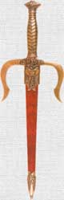
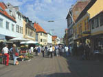

>
| SHI |
|
Since SHE lives in a small city, she carries a dagger for protection. |
| 市長 | |
| 市民 |
citizens of a city
★★☆☆☆
|
| xxx 市 |
xxx-city ★☆☆☆☆ SUF Suffix meaning, "xxx City" |
| 株式市場 |
stock market
★☆☆☆☆
NEO
株式（stocks)＋地場(marketplace)＝the stock market！ |
 KANJIDAMAGE
KANJIDAMAGE